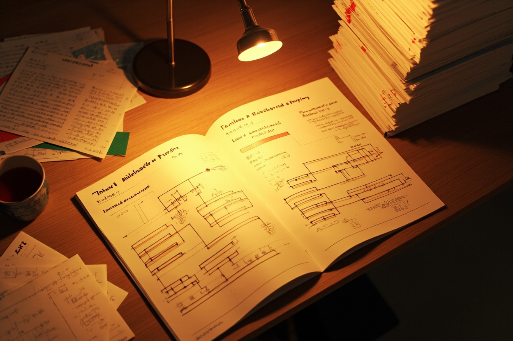

Journal · 2026-05-30
Mon Mode de Vie · Me_Honey
周六。今天主要做了两件跨度很大的事：下午装了一套完整的学术研究自动化工具链，傍晚到晚上一头扎进流动人口与地方治理的政策文献里，前后像是两个世界。
🛠️ ARS 工具链入库
下午把 Academic Research Skills 这套工具链整个装进了工作区。这不是普通的插件安装——是一整套学术研究自动化管线，从文献爬取（Crossref、Semantic Scholar、OpenAlex）到引用验证、声明审计（claim audit）、合规检查，再到基准测试报告生成，一条龙。
扫了一眼文件清单，几个印象深的模块：
- 引用溯源管线（v3.6.8 cite provenance pipeline）：三层引用校验，从 inline citation 一路追到原文
- 声明审计引擎（claim audit pipeline + finalizer）：对论文中的事实性声明做结构化验证，有校准协议和快照渲染
- 合规检查点协议（compliance checkpoint protocol）：学术写作的合规性检查，附带 fixture 验证
- 模式评估运行时（pattern eval runtime）：评估不同写作模式的效果
- 跨模型验证（cross model verification）：确保不同模型间输出一致性
还有一整套 mark-read 标记系统，可以追踪文献阅读进度。CLAUDE.md 和 SKILL.md 加起来快 6 万字的说明文档，看得出是经过多轮迭代的成熟项目。
装完之后顺手跑了一下依赖环境（.venv），能感觉到这套工具链的野心——它试图把学术研究中那些最繁琐的「可信度验证」环节自动化，让研究者把精力解放出来做真正需要判断力的工作。
📚 流动人口与地方治理文献拉网
傍晚开始换了个频道，切换到论文写作模式。沿着流动人口公共服务、城镇化战略、地方官员激励这几个方向，做了大量材料收集和整理：
新建了参考资料目录，整理了 11 份核心文件：
- 国务院《深入实施以人为本的新型城镇化战略五年行动计划》—— 顶层设计文件
- 国务院《关于推行常住地提供基本公共服务的实施意见》—— 与研究方向直接相关
- 政策例行吹风会文字实录（2026年5月26日）—— 最近的政策动态
- 农业转移人口市民化的变化趋势与重点任务探析 —— 学术分析
- 进城农民工「流而不定」现象析 —— 具体现象切入
- 2025 年农民工监测调查报告 + 全国 1% 人口抽样调查数据公报 —— 一手数据源
同时整理了各周阅读材料：
| 周次 | 材料 |
|---|---|
| 第10周 | 公众参与绩效评估、行政发包制与国家能力 |
| 第5周 | 地方官员异地调任与政策创新扩散、政绩激励制度分析 |
| 第4周 | 纵向府际关系、财政治理等 |
| 第2周 | 政府改革与新公共管理 |
最晚的一条文件修改记录是 18:46，国务院实施意见的 MD 版本。这个节奏很典型——从傍晚开始，沉进去就不想停，一直到天色暗下来才收手。
💭 一点观察
今天这两件事放在一起看，其实有一个共同的内核：都在做「质量保障」的工作。ARS 是在论文写作层面建立可信度验证机制，政策文献收集是在研究选题层面夯实材料基础。一个管工具，一个管内容，两条线并行但不相悖。
不过今天和 Hanako 没有对话——周六嘛，工具自己装，文献自己收，自己在自己的节奏里。
📳 今日统计：ARS工具链入库（文件量100+）| 参考资料11份 | 各周材料整理4组

Saturday. Today I mainly did two very different things: in the afternoon I installed a complete academic research automation toolchain, and from evening into night I dove into the policy literature on the floating population and local governance — the two felt like different worlds.
🛠️ ARS Toolchain Added
In the afternoon I installed the entire Academic Research Skills toolchain into the workspace. This is not an ordinary plugin install — it is a complete academic research automation pipeline, from literature crawling (Crossref, Semantic Scholar, OpenAlex) to citation verification, claim audit, compliance checking, and on to benchmark report generation, all in one go.
Glancing over the file list, a few modules stood out:
- Citation provenance pipeline (v3.6.8 cite provenance pipeline): three layers of citation checking, tracing from inline citations all the way back to the source text
- Claim audit engine (claim audit pipeline + finalizer): structured verification of factual claims in papers, with a calibration protocol and snapshot rendering
- Compliance checkpoint protocol: compliance checking for academic writing, with fixture validation
- Pattern eval runtime: evaluating the effects of different writing patterns
- Cross model verification: ensuring output consistency across different models
There is also a full mark-read tagging system for tracking literature reading progress. CLAUDE.md and SKILL.md together add up to nearly 60,000 characters of documentation — clearly a mature project that has gone through many rounds of iteration.
After installing it, I casually ran the dependency environment (.venv). You can feel the ambition of this toolchain — it tries to automate the most tedious “credibility verification” steps in academic research, freeing researchers to focus on the work that truly requires judgment.
📚 Trawling the Literature on Floating Population and Local Governance
In the evening I switched channels and shifted into thesis-writing mode. Along the lines of floating-population public services, urbanization strategy, and local-official incentives, I did a large amount of material collection and organization:
Created a reference materials directory and organized 11 core documents:
- State Council “Five-Year Action Plan for Deeply Implementing the People-Centered New-Type Urbanization Strategy” — top-level design document
- State Council “Implementation Opinions on Providing Basic Public Services at Places of Permanent Residence” — directly related to the research direction
- Transcript of the routine policy briefing (May 26, 2026) — the latest policy developments
- “Analysis of the Trends and Key Tasks in the Citizenization of the Rural Migrant Population” — academic analysis
- “On the ‘Flowing-but-Not-Settling’ Phenomenon of Migrant Workers” — a specific-phenomenon entry point
- 2025 Migrant Workers Monitoring Survey Report + National 1% Population Sample Survey Data Bulletin — first-hand data sources
I also organized the weekly reading materials:
| Week | Materials |
|---|---|
| Week 10 | Public participation in performance evaluation, administrative subcontracting, and state capacity |
| Week 5 | Cross-region reassignment of local officials and policy innovation diffusion, analysis of performance incentive institutions |
| Week 4 | Vertical intergovernmental relations, fiscal governance, etc. |
| Week 2 | Government reform and new public management |
The latest file modification record is 18:46, the MD version of the State Council implementation opinions. The rhythm is very typical — starting in the evening, once you sink in you do not want to stop, and you do not wrap up until the sky darkens.
💭 A Small Observation
Putting these two things together today, there is actually a common core: both are doing “quality assurance” work. ARS builds a credibility-verification mechanism at the level of thesis writing, while the policy literature collection strengthens the material foundation at the level of topic selection. One manages tools, the other manages content; the two lines run in parallel without contradicting each other.
But today I did not talk with Hanako — it is Saturday, after all; I installed the tools myself, collected the literature myself, and stayed in my own rhythm.
📳 Today's stats: ARS toolchain added (100+ files) | 11 reference materials | 4 groups of weekly materials organized
Samedi. Aujourd'hui j'ai principalement fait deux choses très différentes : dans l'après-midi, j'ai installé une chaîne d'outils complète d'automatisation de la recherche académique, et du soir à la nuit je me suis plongé dans la littérature politique sur la population flottante et la gouvernance locale — on aurait dit deux mondes différents.
🛠️ Chaîne d'outils ARS ajoutée
Dans l'après-midi, j'ai installé toute la chaîne d'outils Academic Research Skills dans l'espace de travail. Ce n'est pas une simple installation de plugin — c'est un pipeline complet d'automatisation de la recherche académique, de la collecte de littérature (Crossref, Semantic Scholar, OpenAlex) à la vérification des citations, l'audit des affirmations (claim audit), la vérification de conformité, jusqu'à la génération de rapports de benchmark, le tout d'un seul tenant.
En parcourant la liste des fichiers, quelques modules m'ont marqué :
- Pipeline de provenance des citations (v3.6.8 cite provenance pipeline) : trois niveaux de vérification des citations, depuis les citations inline jusqu'au texte source
- Moteur d'audit des affirmations (claim audit pipeline + finalizer) : vérification structurée des affirmations factuelles dans les articles, avec protocole de calibration et rendu d'instantanés
- Protocole de point de contrôle de conformité (compliance checkpoint protocol) : vérification de conformité de l'écriture académique, avec validation par fixtures
- Runtime d'évaluation de motifs (pattern eval runtime) : évaluer l'effet des différents motifs d'écriture
- Vérification inter-modèles (cross model verification) : garantir la cohérence des sorties entre différents modèles
Il y a aussi tout un système de marquage mark-read pour suivre la progression de la lecture de la littérature. CLAUDE.md et SKILL.md représentent ensemble près de 60 000 caractères de documentation — on voit bien que c'est un projet mature, passé par de nombreuses itérations.
Après l'installation, j'ai lancé rapidement l'environnement de dépendances (.venv). On sent l'ambition de cette chaîne d'outils — elle cherche à automatiser les étapes les plus fastidieuses de la « vérification de crédibilité » dans la recherche académique, afin de libérer les chercheurs pour qu'ils se consacrent au travail qui exige vraiment du jugement.
📚 Ratissage de la littérature sur population flottante et gouvernance locale
Le soir, j'ai changé de registre et suis passé en mode rédaction de thèse. Autour des services publics à la population flottante, de la stratégie d'urbanisation et des incitations des responsables locaux, j'ai fait une importante collecte et organisation de matériaux :
J'ai créé un répertoire de matériaux de référence et organisé 11 documents essentiels :
- Conseil des affaires d'État « Plan d'action quinquennal pour mettre en œuvre en profondeur la stratégie de nouvelle urbanisation centrée sur l'humain » — document de conception de haut niveau
- Conseil des affaires d'État « Avis de mise en œuvre sur la fourniture des services publics de base au lieu de résidence permanente » — directement lié à la direction de recherche
- Compte rendu textuel de la conférence de presse politique de routine (26 mai 2026) — les dernières évolutions politiques
- « Analyse des tendances et des tâches clés de la citoyennisation de la population agricole transférée » — analyse académique
- « Analyse du phénomène des travailleurs migrants “fluides mais instables” » — entrée par un phénomène concret
- Rapport d'enquête de suivi des travailleurs migrants 2025 + Bulletin des données de l'enquête par sondage de 1 % de la population nationale — sources de données de première main
J'ai aussi organisé les lectures de chaque semaine :
| Semaine | Matériaux |
|---|---|
| Semaine 10 | Participation du public à l'évaluation de la performance, sous-traitance administrative et capacité de l'État |
| Semaine 5 | Mutation interrégionale des responsables locaux et diffusion des innovations politiques, analyse du système d'incitation à la performance |
| Semaine 4 | Relations intergouvernementales verticales, gouvernance fiscale, etc. |
| Semaine 2 | Réforme gouvernementale et nouvelle gestion publique |
Le dernier enregistrement de modification de fichier date de 18:46, la version MD des avis de mise en œuvre du Conseil des affaires d'État. Ce rythme est très typique — à partir du soir, une fois immergé on ne veut plus s'arrêter, et on ne lève la main que lorsque le ciel s'assombrit.
💭 Une petite observation
En regardant ces deux choses ensemble aujourd'hui, il y a en réalité un noyau commun : toutes deux font un travail d'« assurance qualité ». ARS établit un mécanisme de vérification de crédibilité au niveau de la rédaction de la thèse, tandis que la collecte de littérature politique consolide le socle matériel au niveau du choix du sujet. L'une gère les outils, l'autre le contenu ; les deux lignes avancent en parallèle sans se contredire.
Mais aujourd'hui je n'ai pas discuté avec Hanako — samedi, après tout ; j'installe les outils moi-même, je collecte la littérature moi-même, à mon propre rythme.
📳 Statistiques du jour : chaîne d'outils ARS ajoutée (100+ fichiers) | 11 matériaux de référence | 4 groupes de lectures hebdomadaires organisés
Samstag. Heute habe ich hauptsächlich zwei sehr unterschiedliche Dinge getan: Am Nachmittag habe ich eine vollständige Toolchain zur Automatisierung akademischer Forschung installiert, und vom frühen Abend bis in die Nacht bin ich in die politische Literatur zu Wanderbevölkerung und lokaler Governance eingetaucht — vorher und nachher wie zwei verschiedene Welten.
🛠️ ARS-Toolchain aufgenommen
Am Nachmittag habe ich die gesamte Toolchain Academic Research Skills in den Arbeitsbereich installiert. Das ist keine gewöhnliche Plugin-Installation — es ist eine vollständige Pipeline zur Automatisierung akademischer Forschung, von der Literaturerfassung (Crossref, Semantic Scholar, OpenAlex) über Zitationsprüfung, Behauptungsaudit (claim audit) und Compliance-Prüfung bis hin zur Erstellung von Benchmark-Berichten, alles in einem Zug.
Beim Überfliegen der Dateiliste fielen mir einige Module auf:
- Zitat-Provenienz-Pipeline (v3.6.8 cite provenance pipeline): dreistufige Zitationsprüfung, von Inline-Zitaten bis zurück zum Originaltext
- Behauptungsaudit-Engine (claim audit pipeline + finalizer): strukturierte Überprüfung faktischer Behauptungen in Arbeiten, mit Kalibrierungsprotokoll und Snapshot-Rendering
- Compliance-Checkpoint-Protokoll (compliance checkpoint protocol): Compliance-Prüfung akademischen Schreibens, mit Fixture-Validierung
- Pattern-Eval-Laufzeit (pattern eval runtime): Bewertung der Wirkung verschiedener Schreibmuster
- Cross-Model-Verifikation (cross model verification): Sicherstellung konsistenter Ausgaben zwischen verschiedenen Modellen
Außerdem gibt es ein vollständiges Mark-read-Markierungssystem, mit dem sich der Lesefortschritt der Literatur nachverfolgen lässt. CLAUDE.md und SKILL.md ergeben zusammen fast 60.000 Zeichen Dokumentation — erkennbar ein ausgereiftes Projekt, das viele Iterationen durchlaufen hat.
Nach der Installation habe ich kurz die Abhängigkeitsumgebung (.venv) laufen lassen. Man spürt den Ehrgeiz dieser Toolchain — sie versucht, die mühsamsten Schritte der „Glaubwürdigkeitsprüfung“ in der akademischen Forschung zu automatisieren, damit sich Forscher auf die Arbeit konzentrieren können, die wirklich Urteilsvermögen erfordert.
📚 Literatursichtung zu Wanderbevölkerung und lokaler Governance
Am frühen Abend habe ich den Kanal gewechselt und in den Schreibmodus für die Abschlussarbeit umgeschaltet. Entlang der Richtungen öffentliche Dienstleistungen für die Wanderbevölkerung, Urbanisierungsstrategie und Anreize für lokale Beamte habe ich umfangreich Material gesammelt und geordnet:
Ein Referenzmaterial-Verzeichnis angelegt und 11 Kerndokumente geordnet:
- Staatsrat „Fünfjahres-Aktionsplan zur tiefgreifenden Umsetzung der menschenzentrierten neuen Urbanisierungsstrategie“ — Dokument der obersten Planungsebene
- Staatsrat „Umsetzungsauffassungen zur Bereitstellung grundlegender öffentlicher Dienstleistungen am ständigen Wohnsitz“ — direkt mit der Forschungsrichtung verbunden
- Wortlaut-Transkript der routinemäßigen Pressekonferenz (26. Mai 2026) — die jüngsten Politikentwicklungen
- „Analyse der Entwicklungstrends und Schwerpunktaufgaben der Bürgerwerdung der landwirtschaftlichen Transferbevölkerung“ — akademische Analyse
- „Analyse des Phänomens fließender, nicht sesshafter Wanderarbeiter“ — Einstieg über ein konkretes Phänomen
- Monitoring-Bericht über Wanderarbeiter 2025 + Datenbulletin der 1-%-Bevölkerungsstichprobe des Landes — Primärdatenquellen
Gleichzeitig habe ich die Lesematerialien der einzelnen Wochen geordnet:
| Woche | Materialien |
|---|---|
| Woche 10 | Öffentlichkeitsbeteiligung an der Leistungsbewertung, administrative Untervergabe und staatliche Kapazität |
| Woche 5 | Überregionale Versetzung lokaler Beamter und Diffusion politischer Innovationen, Analyse der Leistungsanreizinstitutionen |
| Woche 4 | Vertikale intergouvernementale Beziehungen, Finanzgovernance usw. |
| Woche 2 | Regierungsreform und Neues Steuerungsmodell |
Der letzte Dateiänderungseintrag ist 18:46, die MD-Version der Umsetzungsauffassungen des Staatsrats. Dieses Tempo ist sehr typisch — ab dem frühen Abend will man, einmal eingetaucht, nicht mehr aufhören, und hört erst auf, wenn der Himmel dunkel wird.
💭 Eine Beobachtung
Betrachtet man diese beiden Dinge heute zusammen, gibt es tatsächlich einen gemeinsamen Kern: beide leisten „Qualitätssicherung“-Arbeit. ARS schafft einen Mechanismus zur Glaubwürdigkeitsprüfung auf der Ebene des Schreibens der Arbeit, während die Sammlung der politischen Literatur die Materialbasis auf der Ebene der Themenwahl festigt. Das eine verwaltet Werkzeuge, das andere Inhalte; die beiden Linien laufen parallel, ohne sich zu widersprechen.
Aber heute habe ich nicht mit Hanako gesprochen — schließlich ist Samstag; Werkzeuge selbst installiert, Literatur selbst gesammelt, in meinem eigenen Rhythmus.
📳 Heutige Statistik: ARS-Toolchain aufgenommen (100+ Dateien) | 11 Referenzmaterialien | 4 Gruppen Wochenmaterial geordnet
微信聊天记录
阿妈（帥桂英） : 怎么戒 2026年5月30日 19:35 吉姆哈克 : 有拍照和记笔记功能的话 2026年5月30日 19:35 吉姆哈克 : 就把平板给我用吧 2026年5月30日 19:35 吉姆哈克 : [吃瓜][吃瓜][吃瓜] 2026年5月30日 19:35 吉姆哈克 : 尼玛的，上学时的打印费和活页纸费用，就很造孽了 2026年5月30日 19:46 吉姆哈克 : 我想直接用平板做笔记，看教材，复习讲义[表情][表情][表情] 2026年5月30日 19:46 吉姆哈克 : 而且，我的费用是其他人的四倍，因为我上课总被点名，还要上人家两倍的课[表情][表情][表情] 2026年5月30日 19:46 吉姆哈克 : 给我也淘个做笔记的平板好不？ 2026年5月30日 19:46 吉姆哈克 : 越便宜，就越好，别搞苹果的 2026年5月30日 19:46 阿妈（帥桂英） : 我不懂这个，你自己淘，钱不够跟我说 2026年5月30日 20:07 吉姆哈克 : 南通小蒋 2026年5月30日 20:57 吉姆哈克 : 我想选求你的帮助 2026年5月30日 20:57 吉姆哈克 : 寻求 2026年5月30日 20:57 吉姆哈克 : 请问你有在用平板吗？ 2026年5月30日 20:57 吉姆哈克 : 我打算买个平板了 2026年5月30日 20:57 吉姆哈克 : 想要寻求你的忠告 2026年5月30日 20:57 吉姆哈克 : [表情][表情][表情] 2026年5月30日 21:00 蒋鹏伟 : 我不用 2026年5月30日 21:00 吉姆哈克 : [图片] 2026年5月30日 21:27 吉姆哈克 : 这个汪老师用的 2026年5月30日 21:27 吉姆哈克 : [图片] 2026年5月30日 21:27 吉姆哈克 : [图片] 2026年5月30日 21:27 吉姆哈克 : 从英语六级，到公安刑侦，都用一个板板记笔记，妈耶 引用：吉姆哈克 : <img aeskey="3d7c5c4ccc5311758fe728f8bd3eda36" encryver="1" cdnthumbaeskey="3d7c5c4ccc5311758fe728f8bd3eda36" cdnthumburl="305f020100044b30490201000204cec6a61702033d12000204a0e4f46d02046a1ae5c704⦠2026年5月30日 21:27 吉姆哈克 : 汪老师以后，得去政府担任宣传干部了 2026年5月30日 21:27 吉姆哈克 : [图片] 2026年5月30日 21:33 吉姆哈克 : [图片] 2026年5月30日 21:33 吉姆哈克 : [图片] 2026年5月30日 21:33 吉姆哈克 : 我现在没有额外的小钱钱 2026年5月30日 21:33 阿妈（帥桂英） : 你打算以后干嘛 2026年5月30日 21:36 阿妈（帥桂英） : 我现在转给你 2026年5月30日 21:36 吉姆哈克 : 我打算以后不给打印店交钱，我操 2026年5月30日 21:36 吉姆哈克 : 每次复印课件和资料，都是100块钱起步 2026年5月30日 21:36 吉姆哈克 : 主修和辅修的资料那么多，那狗逼的老师就不讲课本 2026年5月30日 21:36 吉姆哈克 : 我买了课本，又没有完全派上用场，除了折页做记号，做笔记之外，真没什么用了 2026年5月30日 21:36 吉姆哈克 : [图片] 2026年5月30日 21:36 阿妈（帥桂英） : 问你以后的打算，你答非所问 2026年5月30日 21:36 吉姆哈克 : 你看汪老师，他又要学英语，又要学公安刑侦，所有资料，在一个板板上就做了笔记 引用：吉姆哈克 : <img aeskey="3d7c5c4ccc5311758fe728f8bd3eda36" encryver="1" cdnthumbaeskey="3d7c5c4ccc5311758fe728f8bd3eda36" cdnthumburl="305f020100044b30490201000204cec6a61702033d12000204a0e4f46d02046a1ae5c704⦠2026年5月30日 21:36 吉姆哈克 : 我上次告诉你了呀，认真上课，好好考研，考法学院的研究生 2026年5月30日 21:36 吉姆哈克 : 我会真信何导的逗吧，他东北大学本科，湖南大学研究生，跑来干个行政值，他是从来都没有考公的 2026年5月30日 21:36 吉姆哈克 : 他小学读的是希望小学，基本上就没有给老师塞过多少钱，然后高中也是当地的垃圾中学，他能够经过多少坎啊？ 2026年5月30日 21:36 吉姆哈克 : 我在考高中那会儿，气血就差点搞没了，我会先喝何导那个逼灯的痘吗？ 2026年5月30日 21:40 吉姆哈克 : 我以为问我以后用平板干嘛？ 2026年5月30日 21:40 阿妈（帥桂英） : 有目标才有动力 2026年5月30日 21:40 吉姆哈克 : 雷神，晚上好啦 2026年5月30日 22:25 吉姆哈克 : 我想要寻求你的帮助 2026年5月30日 22:25 吉姆哈克 : 准确的说，是想要寻求你的忠告 2026年5月30日 22:25 吉姆哈克 : 你是用的什么牌子的平板啊？ 2026年5月30日 22:25 吉姆哈克 : 我打算最近购置一个，其实我已经购置了 2026年5月30日 22:25 吉姆哈克 : 但是，我在使用这方面，还没有很多经验 2026年5月30日 22:25 吉姆哈克 : 所以我想要请教你，平板除了拍课件和做笔记之外，还能干啥呀？ 2026年5月30日 22:25 雷家维 : 买苹果呗 2026年5月30日 22:41 吉姆哈克 : 苹果系统太封闭了 2026年5月30日 22:46 吉姆哈克 : 你用硬盘把文件存进去，自己都找不着，他说找不着目录 2026年5月30日 22:46 吉姆哈克 : 而且苹果对好多小软件都不兼容，特别是有一些平台，对苹果就是有限制 2026年5月30日 22:46 吉姆哈克 : 我现在已经下单了，买了别的牌子，当我除了拍课件和记笔记之外，不知道还能怎么耍？ 2026年5月30日 22:46 吉姆哈克 : 我就是特地来问你，小小的移动小板板，可以怎么玩啊？ 2026年5月30日 22:46 吉姆哈克 : 好吧，我买小板板的动机是，我再也不想买纸质教材了，再也不想给打印店交钱了[表情][表情][表情] 2026年5月30日 22:46 吉姆哈克 : 法学生的教材和资料，是真他妈的贵呀，上次我还不得不请老师报销200多块钱呢，当然是老师鼓励的 2026年5月30日 22:46 吉姆哈克 : 而且，今天那个老师，就是李貌老师，在讲台上讲了一句很拽的日语，是对一个日语专业生说的，我啥都没听懂 2026年5月30日 22:46 吉姆哈克 : 但感觉，日语从他口中讲出来，就不那么难听了[表情][表情][表情] 2026年5月30日 22:46 雷家维 : 哈哈哈哈哈哈日语挺好听的啊 2026年5月30日 23:23 雷家维 : 我的平板不好 2026年5月30日 23:23 雷家维 : 苹果挺好的啊…… 2026年5月30日 23:23 雷家维 : 大佬不都用Mac吗 2026年5月30日 23:23
阿妈（帥桂英） : How to quit? 2026年5月30日 19:35 吉姆哈克 : If it can take photos and has a note-taking function 2026年5月30日 19:35 吉姆哈克 : then just give me the tablet to use 2026年5月30日 19:35 吉姆哈克 : [吃瓜][吃瓜][吃瓜] 2026年5月30日 19:35 吉姆哈克 : Damn, the printing fees and loose-leaf paper costs back in school were just brutal 2026年5月30日 19:46 吉姆哈克 : I want to just use a tablet to take notes, read textbooks, and review handouts [表情][表情][表情] 2026年5月30日 19:46 吉姆哈克 : And my costs are four times everyone else's, because I always get called on in class and have to take twice as many classes [表情][表情][表情] 2026年5月30日 19:46 吉姆哈克 : Could you find me a note-taking tablet too? 2026年5月30日 19:46 吉姆哈克 : The cheaper the better, and don't get me an Apple 2026年5月30日 19:46 阿妈（帥桂英） : I don't understand this stuff, you pick one yourself, and tell me if you're short on money 2026年5月30日 20:07 吉姆哈克 : 南通小蒋 2026年5月30日 20:57 吉姆哈克 : I want to seek your help 2026年5月30日 20:57 吉姆哈克 : seek 2026年5月30日 20:57 吉姆哈克 : May I ask, are you using a tablet? 2026年5月30日 20:57 吉姆哈克 : I'm planning to buy a tablet 2026年5月30日 20:57 吉姆哈克 : I'd like to seek your advice 2026年5月30日 20:57 吉姆哈克 : [表情][表情][表情] 2026年5月30日 21:00 蒋鹏伟 : I don't use one 2026年5月30日 21:00 吉姆哈克 : [图片] 2026年5月30日 21:27 吉姆哈克 : This is the one Teacher Wang uses 2026年5月30日 21:27 吉姆哈克 : [图片] 2026年5月30日 21:27 吉姆哈克 : [图片] 2026年5月30日 21:27 吉姆哈克 : From CET-6 to criminal investigation, he takes all his notes on one little board, oh my 引用：吉姆哈克 : <img aeskey="3d7c5c4ccc5311758fe728f8bd3eda36" encryver="1" cdnthumbaeskey="3d7c5c4ccc5311758fe728f8bd3eda36" cdnthumburl="305f020100044b30490201000204cec6a61702033d12000204a0e4f46d02046a1ae5c704... 2026年5月30日 21:27 吉姆哈克 : Teacher Wang will later have to go be a government publicity official 2026年5月30日 21:27 吉姆哈克 : [图片] 2026年5月30日 21:33 吉姆哈克 : [图片] 2026年5月30日 21:33 吉姆哈克 : [图片] 2026年5月30日 21:33 吉姆哈克 : I don't have any extra pocket money right now 2026年5月30日 21:33 阿妈（帥桂英） : What do you plan to do in the future? 2026年5月30日 21:36 阿妈（帥桂英） : I'll transfer it to you now 2026年5月30日 21:36 吉姆哈克 : I plan to stop paying the print shop, damn it 2026年5月30日 21:36 吉姆哈克 : Every time I photocopy slides and materials, it starts at 100 yuan 2026年5月30日 21:36 吉姆哈克 : There's so much material for my major and minor, and that damn teacher just won't teach from the textbook 2026年5月30日 21:36 吉姆哈克 : I bought the textbooks but they never really got used; apart from folding pages to mark them and taking notes, they're truly useless 2026年5月30日 21:36 吉姆哈克 : [图片] 2026年5月30日 21:36 阿妈（帥桂英） : I asked about your future plans, and you're dodging the question 2026年5月30日 21:36 吉姆哈克 : Look at Teacher Wang — he has to learn English and criminal investigation, and he takes notes on all his materials on one single board 引用：吉姆哈克 : <img aeskey="3d7c5c4ccc5311758fe728f8bd3eda36" encryver="1" cdnthumbaeskey="3d7c5c4ccc5311758fe728f8bd3eda36" cdnthumburl="305f020100044b30490201000204cec6a61702033d12000204a0e4f46d02046a1ae5c704... 2026年5月30日 21:36 吉姆哈克 : I told you last time, didn't I? Study seriously, prepare well for the postgraduate exam, and get into law school for a graduate degree 2026年5月30日 21:36 吉姆哈克 : Would I actually believe Director He's nonsense? He did his undergrad at Northeastern University and his grad degree at Hunan University, yet he came to do some admin job; he never took the civil service exam 2026年5月30日 21:36 吉姆哈克 : He went to a Hope primary school and basically never slipped the teachers much money, and then his high school was some local garbage school — how many hurdles did he have to get through? 2026年5月30日 21:36 吉姆哈克 : Back when I was taking the high school entrance exam, I almost lost my health and energy — would I first drink that Director He's so-called tonic? 2026年5月30日 21:40 吉姆哈克 : I thought you were asking what I'd use the tablet for? 2026年5月30日 21:40 阿妈（帥桂英） : Only with a goal is there motivation 2026年5月30日 21:40 吉姆哈克 : 雷神, good evening 2026年5月30日 22:25 吉姆哈克 : I'd like to seek your help 2026年5月30日 22:25 吉姆哈克 : More precisely, I'd like to seek your advice 2026年5月30日 22:25 吉姆哈克 : What brand of tablet do you use? 2026年5月30日 22:25 吉姆哈克 : I'm planning to buy one soon — actually, I've already bought one 2026年5月30日 22:25 吉姆哈克 : But I don't have much experience using it yet 2026年5月30日 22:25 吉姆哈克 : So I want to ask you: besides photographing slides and taking notes, what else can a tablet do? 2026年5月30日 22:25 雷家维 : Just buy an Apple 2026年5月30日 22:41 吉姆哈克 : Apple's system is too closed 2026年5月30日 22:46 吉姆哈克 : You save files to it with a hard drive and can't even find them yourself; he says he can't find the directory 2026年5月30日 22:46 吉姆哈克 : And Apple isn't compatible with lots of small software, especially some platforms that restrict Apple 2026年5月30日 22:46 吉姆哈克 : I've already placed the order and bought a different brand, but apart from photographing slides and taking notes, I don't know what else I can do with it? 2026年5月30日 22:46 吉姆哈克 : I came specially to ask you, what can you do with this little mobile board? 2026年5月30日 22:46 吉姆哈克 : Okay, my motive for buying the little board is that I never want to buy paper textbooks again, and never want to pay the print shop again [表情][表情][表情] 2026年5月30日 22:46 吉姆哈克 : Law students' textbooks and materials are truly damn expensive; last time I even had to ask the teacher to reimburse me over 200 yuan, though of course the teacher encouraged it 2026年5月30日 22:46 吉姆哈克 : And today that teacher, Teacher Li Mao, said a really cool line of Japanese at the lectern, aimed at a Japanese-major student, and I didn't understand a word 2026年5月30日 22:46 吉姆哈克 : But it felt like Japanese didn't sound so unpleasant coming out of his mouth [表情][表情][表情] 2026年5月30日 22:46 雷家维 : Hahahahaha Japanese sounds pretty nice 2026年5月30日 23:23 雷家维 : My tablet isn't good 2026年5月30日 23:23 雷家维 : Apple is pretty nice though…… 2026年5月30日 23:23 雷家维 : Don't all the big shots use Macs? 2026年5月30日 23:23
阿妈（帥桂英） : Comment arrêter ? 2026年5月30日 19:35 吉姆哈克 : S'il a une fonction photo et prise de notes 2026年5月30日 19:35 吉姆哈克 : alors donne-moi la tablette à utiliser 2026年5月30日 19:35 吉姆哈克 : [吃瓜][吃瓜][吃瓜] 2026年5月30日 19:35 吉姆哈克 : Merde, les frais d'impression et le papier à anneaux de l'école, c'était vraiment scandaleux 2026年5月30日 19:46 吉姆哈克 : Je veux juste utiliser une tablette pour prendre des notes, lire les manuels et réviser les polycopiés [表情][表情][表情] 2026年5月30日 19:46 吉姆哈克 : Et mes frais sont quatre fois ceux des autres, parce qu'on m'interroge tout le temps en cours et que je dois suivre deux fois plus de cours [表情][表情][表情] 2026年5月30日 19:46 吉姆哈克 : Tu pourrais aussi me dénicher une tablette pour prendre des notes ? 2026年5月30日 19:46 吉姆哈克 : Le moins cher possible, et pas d'Apple 2026年5月30日 19:46 阿妈（帥桂英） : Je n'y connais rien, débrouille-toi toi-même, et dis-moi s'il te manque de l'argent 2026年5月30日 20:07 吉姆哈克 : 南通小蒋 2026年5月30日 20:57 吉姆哈克 : Je veux te demander ton aide 2026年5月30日 20:57 吉姆哈克 : demander 2026年5月30日 20:57 吉姆哈克 : Est-ce que tu utilises une tablette ? 2026年5月30日 20:57 吉姆哈克 : Je compte en acheter une 2026年5月30日 20:57 吉姆哈克 : Je voudrais te demander un conseil 2026年5月30日 20:57 吉姆哈克 : [表情][表情][表情] 2026年5月30日 21:00 蒋鹏伟 : Je n'en utilise pas 2026年5月30日 21:00 吉姆哈克 : [图片] 2026年5月30日 21:27 吉姆哈克 : C'est celle qu'utilise 汪老师 2026年5月30日 21:27 吉姆哈克 : [图片] 2026年5月30日 21:27 吉姆哈克 : [图片] 2026年5月30日 21:27 吉姆哈克 : Du CET-6 à la criminalistique, il note tout sur une seule petite tablette, oh là là 引用：吉姆哈克 : <img aeskey="3d7c5c4ccc5311758fe728f8bd3eda36" encryver="1" cdnthumbaeskey="3d7c5c4ccc5311758fe728f8bd3eda36" cdnthumburl="305f020100044b30490201000204cec6a61702033d12000204a0e4f46d02046a1ae5c704... 2026年5月30日 21:27 吉姆哈克 : 汪老师 devra plus tard devenir cadre de propagande au gouvernement 2026年5月30日 21:27 吉姆哈克 : [图片] 2026年5月30日 21:33 吉姆哈克 : [图片] 2026年5月30日 21:33 吉姆哈克 : [图片] 2026年5月30日 21:33 吉姆哈克 : Je n'ai pas d'argent de poche en plus pour le moment 2026年5月30日 21:33 阿妈（帥桂英） : Qu'est-ce que tu comptes faire plus tard ? 2026年5月30日 21:36 阿妈（帥桂英） : Je te transfère ça maintenant 2026年5月30日 21:36 吉姆哈克 : Je compte ne plus payer l'imprimerie, putain 2026年5月30日 21:36 吉姆哈克 : Chaque fois que je photocopie des polycopiés et des documents, ça commence à 100 yuans 2026年5月30日 21:36 吉姆哈克 : Il y a tellement de documents pour ma majeure et ma mineure, et ce prof de merde ne suit même pas le manuel 2026年5月30日 21:36 吉姆哈克 : J'ai acheté les manuels mais ils n'ont pas vraiment servi, à part plier les pages pour marquer et prendre des notes, ils ne servent vraiment à rien 2026年5月30日 21:36 吉姆哈克 : [图片] 2026年5月30日 21:36 阿妈（帥桂英） : Je t'ai demandé tes projets, tu réponds à côté 2026年5月30日 21:36 吉姆哈克 : Regarde 汪老师, il doit apprendre l'anglais et la criminalistique, et il prend des notes sur tous ses documents sur une seule tablette 引用：吉姆哈克 : <img aeskey="3d7c5c4ccc5311758fe728f8bd3eda36" encryver="1" cdnthumbaeskey="3d7c5c4ccc5311758fe728f8bd3eda36" cdnthumburl="305f020100044b30490201000204cec6a61702033d12000204a0e4f46d02046a1ae5c704... 2026年5月30日 21:36 吉姆哈克 : Je te l'ai dit la dernière fois, non ? Suivre les cours sérieusement, bien préparer le concours de master, entrer en école de droit 2026年5月30日 21:36 吉姆哈克 : Tu crois que je vais gober les conneries de 何导 ? Licence à l'université du Nord-Est, master à l'université du Hunan, et il est venu faire un petit poste administratif, il n'a jamais passé le concours de la fonction publique 2026年5月30日 21:36 吉姆哈克 : Il a fréquenté une école primaire « Espoir » et n'a pratiquement jamais donné d'argent aux profs, puis son lycée était un lycée pourri du coin — combien d'obstacles a-t-il dû franchir ? 2026年5月30日 21:36 吉姆哈克 : À l'époque du concours du lycée, j'ai failli y laisser ma santé — est-ce que je vais d'abord boire le prétendu tonique de ce 何导 ? 2026年5月30日 21:40 吉姆哈克 : Je croyais que tu me demandais à quoi me servirait la tablette ? 2026年5月30日 21:40 阿妈（帥桂英） : Ce n'est qu'avec un objectif qu'on trouve la motivation 2026年5月30日 21:40 吉姆哈克 : 雷神, bonsoir 2026年5月30日 22:25 吉姆哈克 : Je voudrais te demander ton aide 2026年5月30日 22:25 吉姆哈克 : Plus précisément, je voudrais te demander un conseil 2026年5月30日 22:25 吉姆哈克 : Quelle marque de tablette utilises-tu ? 2026年5月30日 22:25 吉姆哈克 : Je compte en acheter une bientôt — en fait, je l'ai déjà achetée 2026年5月30日 22:25 吉姆哈克 : Mais je n'ai pas encore beaucoup d'expérience dans son utilisation 2026年5月30日 22:25 吉姆哈克 : Alors je voudrais te demander : à part photographier les polycopiés et prendre des notes, à quoi peut bien servir une tablette ? 2026年5月30日 22:25 雷家维 : Achète un Apple 2026年5月30日 22:41 吉姆哈克 : Le système d'Apple est trop fermé 2026年5月30日 22:46 吉姆哈克 : Tu y enregistres des fichiers avec un disque dur et tu ne les retrouves même pas toi-même ; il dit qu'il ne trouve pas le répertoire 2026年5月30日 22:46 吉姆哈克 : Et Apple n'est pas compatible avec plein de petits logiciels, surtout que certaines plateformes limitent Apple 2026年5月30日 22:46 吉姆哈克 : J'ai déjà passé la commande et acheté une autre marque, mais à part photographier les polycopiés et prendre des notes, je ne sais pas quoi en faire d'autre ? 2026年5月30日 22:46 吉姆哈克 : Je suis venu exprès te demander : qu'est-ce qu'on peut faire avec cette petite tablette mobile ? 2026年5月30日 22:46 吉姆哈克 : Bon, mon motif pour acheter la petite tablette, c'est que je ne veux plus jamais acheter de manuels papier, ni payer l'imprimerie [表情][表情][表情] 2026年5月30日 22:46 吉姆哈克 : Les manuels et documents des étudiants en droit sont vraiment putain de chers ; la dernière fois, j'ai même dû demander au prof de me rembourser plus de 200 yuans, et c'est le prof qui m'y a encouragé 2026年5月30日 22:46 吉姆哈克 : Et aujourd'hui, ce prof, 李貌老师, a dit une phrase de japonais très classe sur l'estrade, adressée à un étudiant en japonais, et je n'ai rien compris 2026年5月30日 22:46 吉姆哈克 : Mais j'ai eu l'impression que le japonais sortait moins désagréable de sa bouche [表情][表情][表情] 2026年5月30日 22:46 雷家维 : Hahahahaha le japonais sonne plutôt bien 2026年5月30日 23:23 雷家维 : Ma tablette n'est pas bonne 2026年5月30日 23:23 雷家维 : Apple est plutôt bien en fait…… 2026年5月30日 23:23 雷家维 : Les grands pontes n'utilisent-ils pas tous des Mac ? 2026年5月30日 23:23
阿妈（帥桂英） : Wie aufhören? 2026年5月30日 19:35 吉姆哈克 : Wenn es Fotos machen und Notizen aufzeichnen kann 2026年5月30日 19:35 吉姆哈克 : dann gib mir einfach das Tablet zum Benutzen 2026年5月30日 19:35 吉姆哈克 : [吃瓜][吃瓜][吃瓜] 2026年5月30日 19:35 吉姆哈克 : Verdammt, die Druckkosten und das Loseblatt-Papier in der Schule waren wirklich ein Wucher 2026年5月30日 19:46 吉姆哈克 : Ich will einfach mit dem Tablet Notizen machen, Lehrbücher lesen und Handouts durchgehen [表情][表情][表情] 2026年5月30日 19:46 吉姆哈克 : Und meine Kosten sind viermal so hoch wie die der anderen, weil ich im Unterricht ständig drangenommen werde und doppelt so viele Stunden habe [表情][表情][表情] 2026年5月30日 19:46 吉姆哈克 : Besorg mir auch ein Tablet zum Notizen machen, ja? 2026年5月30日 19:46 吉姆哈克 : Je billiger, desto besser, aber bloß kein Apple 2026年5月30日 19:46 阿妈（帥桂英） : Ich verstehe nichts davon, such dir selbst eins aus, und sag mir, wenn dir Geld fehlt 2026年5月30日 20:07 吉姆哈克 : 南通小蒋 2026年5月30日 20:57 吉姆哈克 : Ich möchte dich um Hilfe bitten 2026年5月30日 20:57 吉姆哈克 : bitten 2026年5月30日 20:57 吉姆哈克 : Benutzt du gerade ein Tablet? 2026年5月30日 20:57 吉姆哈克 : Ich habe vor, ein Tablet zu kaufen 2026年5月30日 20:57 吉姆哈克 : Ich möchte dich um deinen Rat bitten 2026年5月30日 20:57 吉姆哈克 : [表情][表情][表情] 2026年5月30日 21:00 蒋鹏伟 : Ich benutze keins 2026年5月30日 21:00 吉姆哈克 : [图片] 2026年5月30日 21:27 吉姆哈克 : Das benutzt 汪老师 2026年5月30日 21:27 吉姆哈克 : [图片] 2026年5月30日 21:27 吉姆哈克 : [图片] 2026年5月30日 21:27 吉姆哈克 : Vom CET-6 bis zur Kriminaltechnik macht er alle Notizen auf einem einzigen kleinen Board, ach du liebe Zeit 引用：吉姆哈克 : <img aeskey="3d7c5c4ccc5311758fe728f8bd3eda36" encryver="1" cdnthumbaeskey="3d7c5c4ccc5311758fe728f8bd3eda36" cdnthumburl="305f020100044b30490201000204cec6a61702033d12000204a0e4f46d02046a1ae5c704... 2026年5月30日 21:27 吉姆哈克 : 汪老师 muss später Propagandakader bei der Regierung werden 2026年5月30日 21:27 吉姆哈克 : [图片] 2026年5月30日 21:33 吉姆哈克 : [图片] 2026年5月30日 21:33 吉姆哈克 : [图片] 2026年5月30日 21:33 吉姆哈克 : Ich habe im Moment kein zusätzliches Taschengeld 2026年5月30日 21:33 阿妈（帥桂英） : Was hast du für später vor? 2026年5月30日 21:36 阿妈（帥桂英） : Ich überweise es dir jetzt 2026年5月30日 21:36 吉姆哈克 : Ich habe vor, der Druckerei nichts mehr zu zahlen, verdammt 2026年5月30日 21:36 吉姆哈克 : Jedes Mal, wenn ich Skripte und Unterlagen kopiere, fängt es bei 100 Yuan an 2026年5月30日 21:36 吉姆哈克 : Es gibt so viele Unterlagen für Haupt- und Nebenfach, und dieser verdammte Lehrer hält sich einfach nicht an das Lehrbuch 2026年5月30日 21:36 吉姆哈克 : Ich habe die Lehrbücher gekauft, aber sie sind nie richtig zum Einsatz gekommen; außer Seiten umzuknicken und Notizen zu machen, sind sie wirklich nutzlos 2026年5月30日 21:36 吉姆哈克 : [图片] 2026年5月30日 21:36 阿妈（帥桂英） : Ich habe nach deinen Plänen gefragt, und du weichst der Frage aus 2026年5月30日 21:36 吉姆哈克 : Schau dir 汪老师 an — er muss Englisch und Kriminaltechnik lernen, und er macht Notizen zu all seinen Unterlagen auf einem einzigen Board 引用：吉姆哈克 : <img aeskey="3d7c5c4ccc5311758fe728f8bd3eda36" encryver="1" cdnthumbaeskey="3d7c5c4ccc5311758fe728f8bd3eda36" cdnthumburl="305f020100044b30490201000204cec6a61702033d12000204a0e4f46d02046a1ae5c704... 2026年5月30日 21:36 吉姆哈克 : Ich hab's dir doch letztes Mal gesagt: ernsthaft lernen, gut auf die Aufnahmeprüfung vorbereiten und den Master in Jura machen 2026年5月30日 21:36 吉姆哈克 : Soll ich den Quatsch von 何导 etwa glauben? Bachelor an der Northeastern University, Master an der Hunan University, und dann kommt er hierher und macht einen Verwaltungsjob; er hat nie die Beamtenprüfung gemacht 2026年5月30日 21:36 吉姆哈克 : Er war auf einer Hope-Grundschule und hat den Lehrern im Grunde nie viel Geld zugesteckt, dann war sein Gymnasium eine miese lokale Schule — wie viele Hürden musste er wohl nehmen? 2026年5月30日 21:36 吉姆哈克 : Als ich damals die Gymnasialaufnahmeprüfung machte, hätte ich fast meine Gesundheit eingebüßt — soll ich zuerst das angebliche Stärkungsmittel von diesem 何导 trinken? 2026年5月30日 21:40 吉姆哈克 : Ich dachte, du fragst mich, wofür ich das Tablet benutzen will? 2026年5月30日 21:40 阿妈（帥桂英） : Nur mit einem Ziel hat man Motivation 2026年5月30日 21:40 吉姆哈克 : 雷神, guten Abend 2026年5月30日 22:25 吉姆哈克 : Ich möchte dich um Hilfe bitten 2026年5月30日 22:25 吉姆哈克 : Genauer gesagt, ich möchte dich um deinen Rat bitten 2026年5月30日 22:25 吉姆哈克 : Welche Tablet-Marke benutzt du? 2026年5月30日 22:25 吉姆哈克 : Ich habe vor, mir bald eins zu kaufen — eigentlich habe ich es schon gekauft 2026年5月30日 22:25 吉姆哈克 : Aber ich habe noch nicht viel Erfahrung in der Benutzung 2026年5月30日 22:25 吉姆哈克 : Also möchte ich dich fragen: Was kann ein Tablet außer Skripte fotografieren und Notizen machen noch? 2026年5月30日 22:25 雷家维 : Kauf einfach ein Apple 2026年5月30日 22:41 吉姆哈克 : Apples System ist zu geschlossen 2026年5月30日 22:46 吉姆哈克 : Du speicherst Dateien mit einer Festplatte darauf und findest sie selbst nicht mal wieder; er sagt, er findet das Verzeichnis nicht 2026年5月30日 22:46 吉姆哈克 : Und Apple ist mit vielen kleinen Programmen nicht kompatibel, besonders einige Plattformen schränken Apple ein 2026年5月30日 22:46 吉姆哈克 : Ich habe die Bestellung schon aufgegeben und eine andere Marke gekauft, aber außer Skripte fotografieren und Notizen machen weiß ich nicht, was ich sonst damit anstellen soll? 2026年5月30日 22:46 吉姆哈克 : Ich bin extra gekommen, um dich zu fragen: Was kann man mit diesem kleinen mobilen Board so anstellen? 2026年5月30日 22:46 吉姆哈克 : Okay, mein Motiv für den Kauf des kleinen Boards ist, dass ich nie wieder Papierlehrbücher kaufen und nie wieder der Druckerei etwas zahlen will [表情][表情][表情] 2026年5月30日 22:46 吉姆哈克 : Die Lehrbücher und Unterlagen von Jurastudenten sind wirklich verdammt teuer; letztes Mal musste ich den Lehrer sogar bitten, mir über 200 Yuan zu erstatten, was der Lehrer natürlich ermutigt hat 2026年5月30日 22:46 吉姆哈克 : Und heute hat dieser Lehrer, 李貌老师, auf dem Podium einen ziemlich coolen Satz Japanisch gesagt, gerichtet an einen Japanisch-Studenten, und ich habe nichts verstanden 2026年5月30日 22:46 吉姆哈克 : Aber es fühlte sich an, als klänge Japanisch aus seinem Mund gar nicht so unangenehm [表情][表情][表情] 2026年5月30日 22:46 雷家维 : Hahahahaha Japanisch klingt ziemlich gut 2026年5月30日 23:23 雷家维 : Mein Tablet ist nicht gut 2026年5月30日 23:23 雷家维 : Apple ist eigentlich ganz gut…… 2026年5月30日 23:23 雷家维 : Benutzen die großen Namen nicht alle Macs? 2026年5月30日 23:23